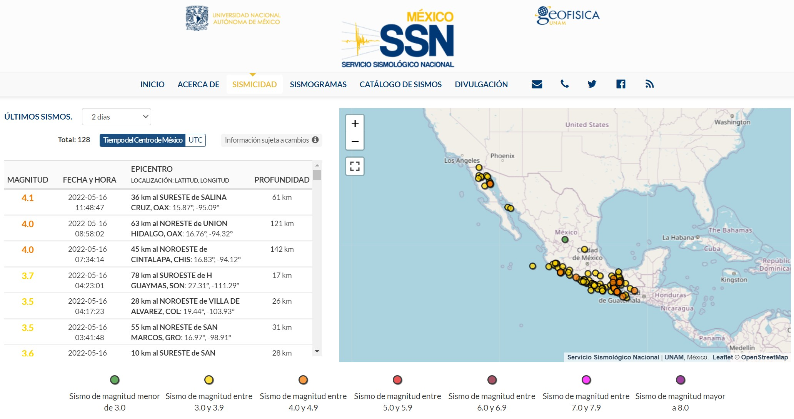
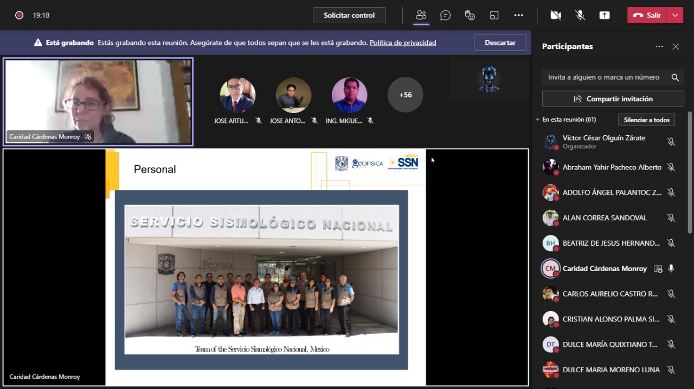
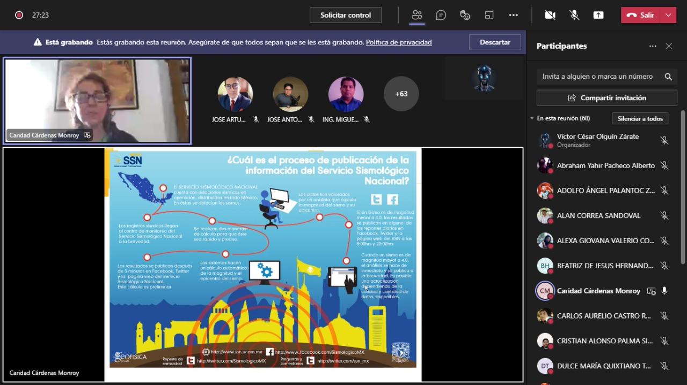
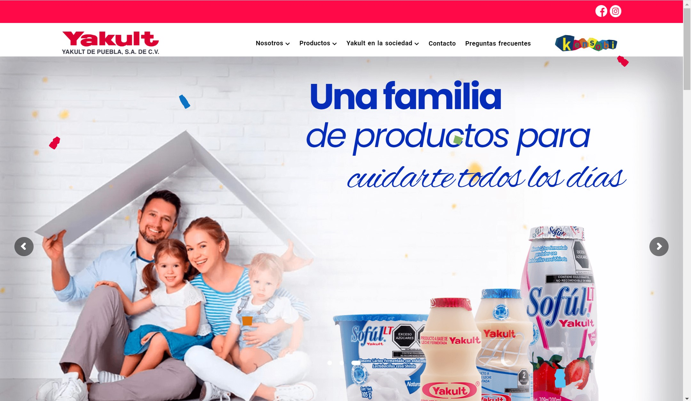
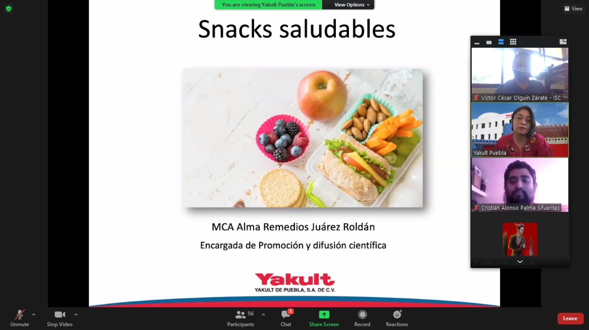
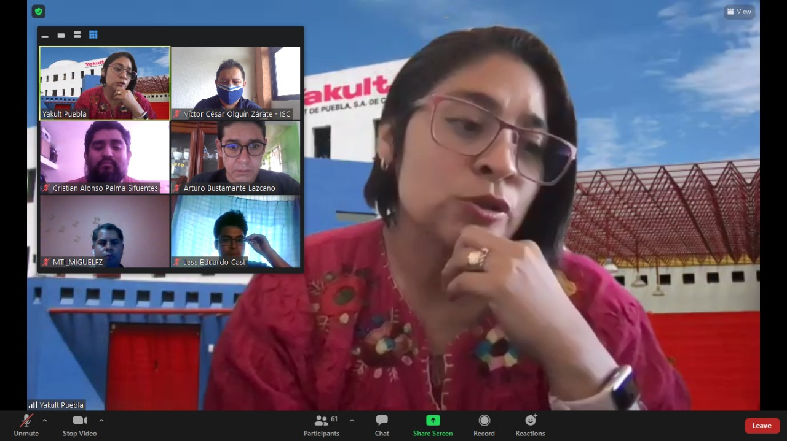

Registrar, almacenar y distribuir datos del movimiento del terreno para informar sobre la sismicidad del país a las autoridades a la población en general, promover el intercambio de datos y cooperar con otras instituciones de monitoreo e investigación a nivel nacional e internacional. Distribuir la información de manera oportuna, eficiente de la localización y magnitud de un sismo. También, cuando sea el caso la cobertura de la red lo permita, proporcionar a las instancias correspondientes los parámetros necesarios para emitir alertas tempranas o iniciar protocolos de protección civil.
Ubicacion
>
Dirección
Circuito de la Investigación Científica s/n, Ciudad Universitaria, Coyoacán, C.P. 04510, Ciudad de México.
Referencia
El Servicio Sismológico Nacional se encuentra a un costado del Instituto de Geofísica, entre la Coordinación de la Investigación Científica y el Instituto de Geología, en Ciudad Universitaria, Ciudad de México. Esto es muy cerca de la estación "Universidad" de la línea 3 del Servicio de Transporte Colectivo de la Ciudad de México, Metro.
En el marco de la contingencia sanitaria por la pandemia de Covid-19 decreta el estado constitucional de catástrofe en el país. Los siguientes protocolos que establecen las medidas acción que deben adoptar las residencias de protección para prevenir y responder adecuadamente ante situaciones de contagio o sospechas de contagio. Una de las medidas adoptadas es la suspensión de visitas y la autorización de ingreso de personas “estrictamente necesarias e indispensables” a la medida que afecta tanto a las visitas de familiares y figuras significativas por lo que unicamente las visitas son virtuales, por lo que se hace nuestra visita de esta manera.
 Yakult de Puebla es una empresa de origen japonés que inicia en 1930 cuando el Dr. Minoru Shirota logra aislar una bacteria y cultivarla para que resista los jugos gástricos, llamándola Lactobacilo Casei Shirota. En 1955 se establece la casa Matriz en Tokio, Japón con el nombre de “YAKULT HONSHA LTD”, donde además de productos lácteos, se comercializan cosméticos y medicamentos. En 1981 se establece Yakult en México y en 1982 en Puebla. Yakult de Puebla pertenece al sector comercio, en el área de lácteos fermentados, siendo el proceso principal, la comercialización de productos probióticos, que incluye: la compra, el almacenamiento, la venta y la cobranza.
Ubicacion
Dirección
Matriz: Yakult de Puebla S.A. de C.V. 33 Sur No. 2505 Col. Santa Cruz Los Ángeles. Puebla, Puebla. C.P. 72400
Referencia
Yakult se encuentra a un costado de la Caseta telefónica BBG Comunicación SA de CV, entre Servicio Electrónico los Angeles y Gersa Bodega 210, Ciudad de Puebla.
En el marco de la contingencia sanitaria por la pandemia de Covid-19 decreta el estado constitucional de catástrofe en el país. Los siguientes protocolos que establecen las medidas acción que deben adoptar las residencias de protección para prevenir y responder adecuadamente ante situaciones de contagio o sospechas de contagio. Una de las medidas adoptadas es la suspensión de visitas y la autorización de ingreso de personas “estrictamente necesarias e indispensables” a la medida que afecta tanto a las visitas de familiares y figuras significativas por lo que unicamente las visitas son virtuales, por lo que se hace nuestra visita de esta manera.
 